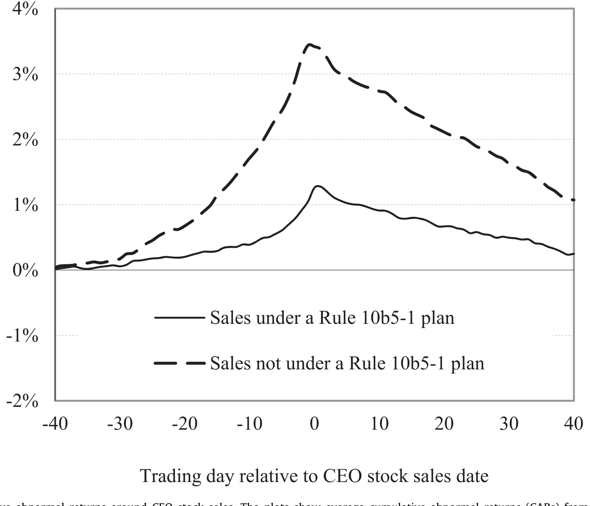
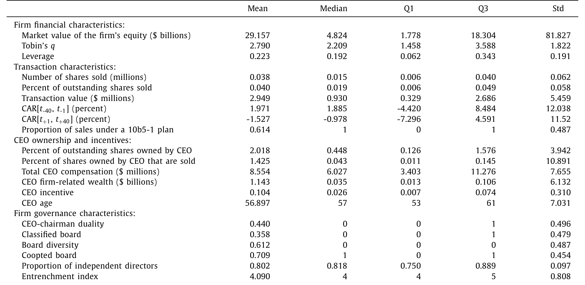
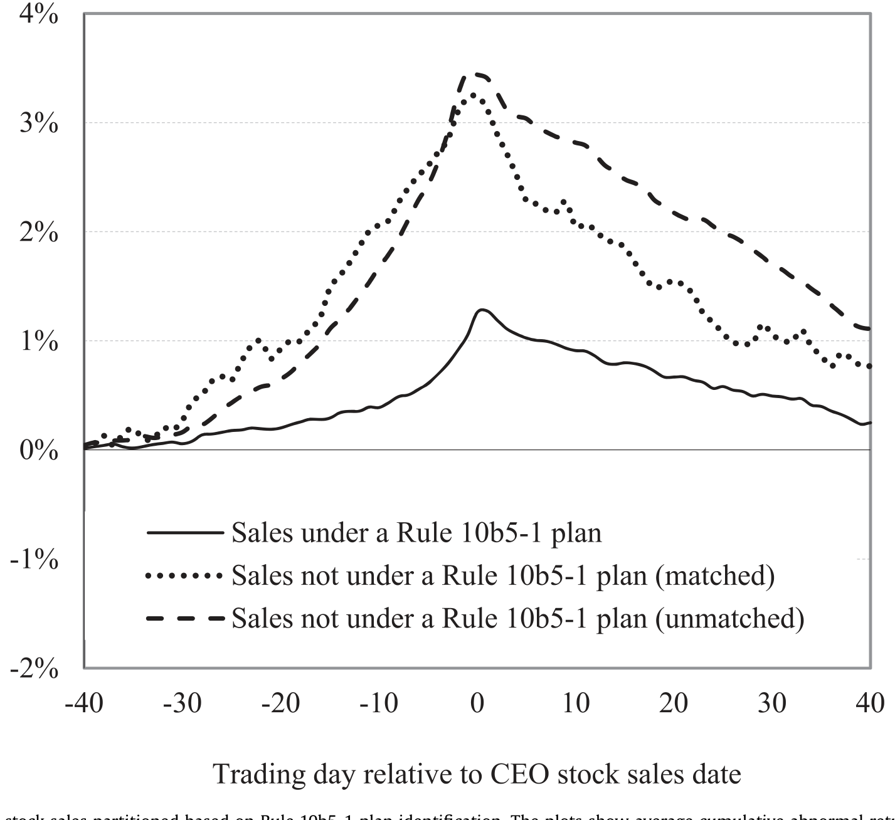
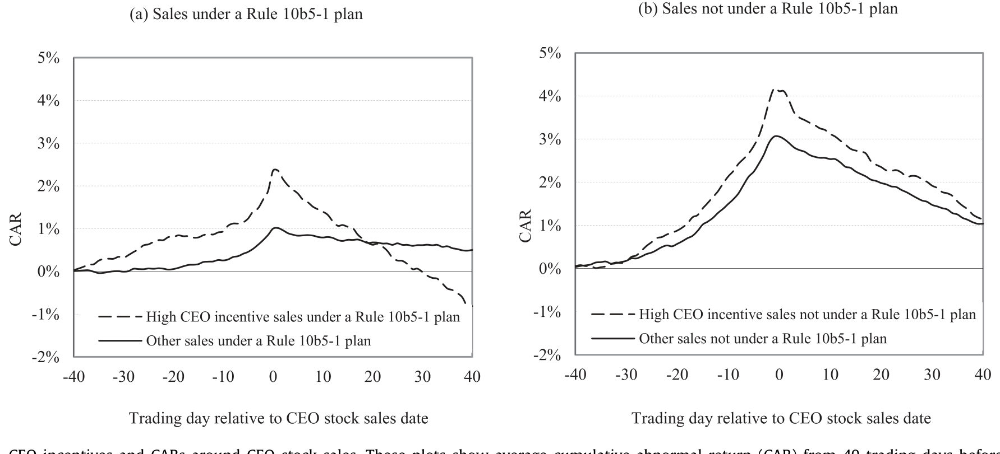
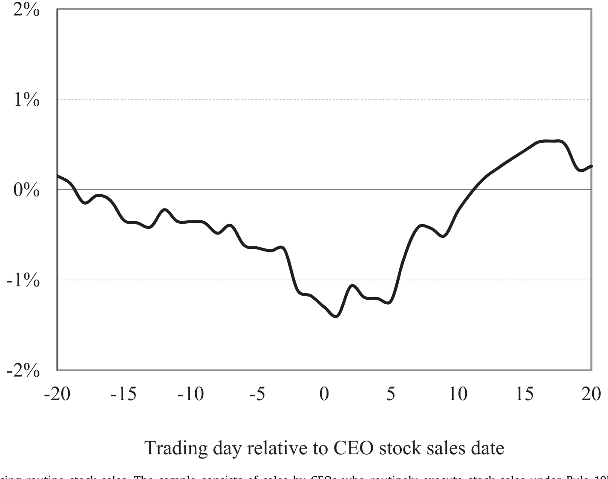
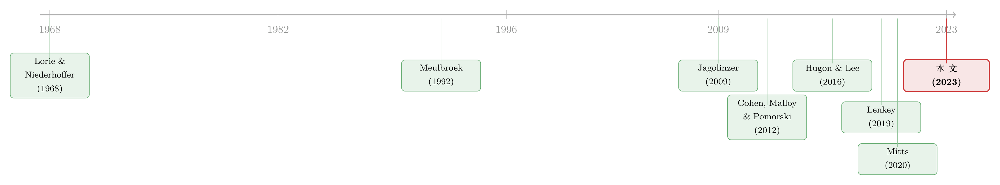

「提前安排好」就等于「没用内幕消息」吗？——拆开 Rule 10b5-1 的三道后门
本文读的是 Fich, Parrino & Tran (2023, Journal of Financial Economics)：SEC 设立 Rule 10b5-1「计划交易」的本意，是让内部人提前锁定买卖、从而洗清「用了内幕消息」的嫌疑。可作者用 2013–2020 年 13,930 笔 CEO 卖股发现——计划内的卖出确实比计划外「干净」一些，但当 CEO 押注金额够大时，计划内的机会主义和计划外一样严重；而且 CEO 还能靠盈余管理、取消计划、限价单这三道后门，把「提前安排」这层法律保护悄悄掏空。
1 一个被设计来「自缚手脚」的安全港
先讲个画面。2020 年 11 月，辉瑞、Moderna 这些药企前脚刚宣布新冠疫苗试验的关键结果，后脚就有高管卖掉了价值数百万美元的自家股票。《华尔街日报》追问：这算不算内幕交易？高管们的挡箭牌很硬气——我们是按 Rule 10b5-1 计划卖的，交易日期早在几个月前就定死了，我当时哪知道疫苗数据会怎样？
这就是 Rule 10b5-1 的精巧之处。2000 年 10 月 SEC 推出这条规则，给内部人提供了一个「肯定式抗辩 (affirmative defense)」：只要你事先和一家独立券商签好计划，约定在未来某些日子、按某个数量买卖股票，那么即便交易那天你手里真握着重大未公开信息 (material non-public information, MNPI)，也不算违法。逻辑很直白——人在不知道未来消息时定下的交易，总不该被算成「按消息行事」吧？
听上去无懈可击。可 SEC 自己越来越不放心。Clayton 主席在 2020 年喊话要加一个「冷静期 (cooling-off period)」，他的继任者 Gensler 同样盯着这件事。监管者的担心是：会不会有人钻进 Rule 10b5-1 这层壳里，照样做着机会主义的交易，只是从此多了一张「免罪金牌」？
这正是本文要回答的核心问题：「提前安排好」到底等不等于「没用内幕消息」？ 如果不等于，内部人是靠什么把这层保护掏空的？
作者衡量「机会主义」的尺子，是一条很经典的曲线。如果一笔卖出，前面跟着一段异常的股价上涨、后面接着一段异常的下跌，那就说明 CEO 恰好卖在了局部高点——这种「先涨后跌」的倒「V」形累计异常收益 (cumulative abnormal return, CAR) 曲线，正是 Yermack (2009) 等人识别「精准择时」内幕卖出的标志。作者把全样本 13,930 笔卖出画出来，果然是一个漂亮的倒 V：卖出前 40 个交易日平均 CAR 为 +1.971%，卖出后 40 天为 -1.527%。

Figure 1: Average cumulative abnormal returns around CEO stock sales. The plots show average cumulative abnormal returns (CARs) from 40 trading days
问题来了：这个倒 V，计划内和计划外的卖出，谁更陡？
2 数据与识别：把「自己选的」摊开来看
数据来自 Thomson Financial Insider Filing（TFN）数据库。样本期从 2013 年起，是因为 TFN 对 Rule 10b5-1 计划交易的覆盖恰好从这一年开始。作者只保留 cleanse 码为「R」或「H」的高质量记录，把 CEO 同一天、同一价格的卖出合并成一笔交易，再要求公司在 CRSP、Compustat、Execucomp、ISS 都能配上数据，最终得到 13,930 笔卖出、1,629 位 CEO、1,322 家公司。其中 8,554 笔（61.4%）在 SEC Form 4 里被标注为通过 Rule 10b5-1 计划执行。

Table 1: reports descriptive statistics for our sample. It
这里有一个绕不开的内生性 (endogeneity) 难题：用不用计划，是 CEO 自己选的。所以「计划内 vs 计划外」的对比，天然混着选择效应。作者用三招来对付它。
首先，他们直接去预测「谁会用计划」。结果（Table 2）显示，用计划卖股的公司，诉讼风险更高、成长机会（Tobin's q）更高、近期股价波动更大；治理上，Bebchuk, Cohen & Ferrell (2009) 的「壕沟指数 (entrenchment index)」更高、董事会被「收编 (coopted)」（≥50% 董事在现任 CEO 上任后才进董事会）的比例更高、独立董事占比也更高。交易特征上，计划卖出占流通股的比例更小、占 CEO 公司相关财富的比例更小，且更可能发生在 CEO 不到 62 岁时。换句话说，计划交易者本来就是一群不太一样的人。
接着，一个自然的问题是：Form 4 里披露是否用了计划是自愿的，所以 61.4% 只是计划卖出比例的下界——很多计划卖出可能被漏报成了「非计划」。作者用倾向得分匹配 (propensity score matching, PSM) 来缓解这种漏报偏误；然后，他们再退一步，只看「受限股 (restricted stock)」卖出这个子样本——因为按 Form 144，受限股卖出必须披露是否用了计划（这部分占样本的 20.2%）。两种处理下，主要结论都站得住。
3 主结果：计划确实更干净——但前提是你没押太多
把倒 V 按计划/非计划拆开，差别一目了然。非计划卖出前面的涨幅更大（+3.40% vs 计划的 +1.12%），后面的跌幅也更深（-2.28% vs 计划的 -1.02%）。也就是说，计划内的卖出，机会主义的「先涨后跌」要平缓得多。

Figure 2: CARs around CEO stock sales partitioned based on Rule 10b5-1 plan identification. The plots show average cumulative abnormal returns (CARs)
但请注意——平缓，不等于没有。计划卖出那 +1.12% 的事前 CAR 和 -1.02% 的事后 CAR，都在 1% 水平上显著异于零。而且作者发现，计划卖出的交易日期被刻意挑选，以放大交易收益的绝对值。所谓「提前锁定、与世无争」，只是程度上的收敛，而非性质上的消失。
这一点直接打脸了 Mavruk & Seyhun (2016) 的结论——他们认为计划卖出和非计划卖出的盈利能力差不多。本文的证据说：不，计划卖出整体上确实更干净。
但真正关键的一步在于：作者去问「CEO 在这笔交易上押了多少身家」。他们定义 CEO incentive = 交易金额 / CEO 公司相关财富（财富按 Coles, Daniel & Naveen (2006, 2013) 的口径，等于持股市值加全部未行权期权价值），并把这个比值最高的 25% 卖出，称为高激励卖出 (high CEO incentive sales)。
于是反转出现了。在高激励样本里，事前 CAR：非计划 +4.03%、计划 +1.98%；可事后 CAR：非计划 -2.92%、计划 -2.94%——几乎一模一样。换句话说，当 CEO 在一笔交易上真正下了重注，那层 Rule 10b5-1 的保护就形同虚设，计划内的卖出和计划外一样精准地卡在了价格回落之前。回归分析也确认了这一点：钱押得够多的 CEO，哪怕走计划的通道，照样能做机会主义交易。

Figure 4: CEO incentives and CARs around CEO stock sales. These plots show average cumulative abnormal return (CAR) from 40 trading days before to 40
这就是全文的「一个核心」：Rule 10b5-1 本质上是一个「承诺装置 (commitment device)」，靠提前锁定来剥夺 CEO 的相机决策权；可一旦诱惑足够大，CEO 总能找到办法把决策权拿回来。 接下来三节，就是这三条「拿回来」的路径。
4 第一道后门：把消息「做」到自己想要的样子
提前定好了卖出日期，怎么还能择时？答案是——你管不住价格，但你能管住价格反映的「消息」。
第一条线索来自 Hugon & Lee (2016)。本文同样发现，计划卖出更可能落在季度盈余公告前的 40 个交易日内，而更不可能落在公告后的 40 天里。直觉很顺：公告前，公司内部信息和市场之间的落差最大，也正是「黑窗期 (blackout period)」通常禁止内部人交易的时段——而一个事先签好的计划，恰好能绕开黑窗期的限制，让 CEO 在信息优势最大的窗口里把股票卖出去。
第二条线索更狠。Skaife et al. (2013) 早就指出，内控薄弱的公司，内幕交易更赚钱。作者顺着这个思路，检查了卖出前后公司的信息披露质量（沿用 Chen, Miao & Shevlin (2015) 的披露质量度量）、会计应计 (accounting accruals)，以及真实交易型盈余管理 (real transaction-based earnings management)（参照 Roychowdhury (2006)、Dechow, Sloan & Sweeney (1995)）。结果是：在发生计划卖出的财年里，披露质量改善得比非计划卖出的财年更多——表面看是好事。可一旦把 CEO incentive 调高，这种改善就缩水到和非计划卖出差不多的水平。配合应计的年度同比增速曲线（Figure 6），故事就清楚了：高激励的卖出（无论计划内外）更可能被「择时」到对 CEO 有利的位置，或者干脆伴随着机会主义的、基于交易的盈余管理。
换句话说，计划锁住了「哪天卖」，但没锁住「那天市场看到的是一份什么样的财报」。CEO 手里还攥着对财务报告和真实经营活动的相机决策权，这就足以让「提前安排」名存实亡。
5 第二道后门：不是所有计划，最后都被执行了
如果说盈余管理是「把好牌发到自己手上」，那么第二道后门更直接——牌不好，就干脆别打。
Rule 10b5-1 允许两种「悄悄反悔」的操作：取消整个计划，或者在计划里挂一个限价单 (limit order)（价格没到就不成交）。两种都合法，但都几乎不需要披露。问题是：如果 CEO 能在坏消息来临前选择性地「不卖」，那他就同样是在利用内幕信息——只不过这次避的是损失，而非赚的是收益。
这正是 Lenkey (2019) 的理论关切：他在模型里证明，若禁止取消预定交易，未知情的外部投资者福利会提高。本文给了这个理论一个漂亮的实证注脚。可「没发生的交易」怎么观测？作者借用 Cohen, Malloy & Pomorski (2012) 识别「常规交易 (routine trading)」的思路反向操作：找出那些惯于按计划在固定节奏卖股、这次却突然「该卖没卖」的 CEO，把这些「大概率被取消/被限价单拦下」的卖出标记出来。
结果和 Figure 1 的倒 V 正好相反——这些「被取消的卖出」画出来是一个正常的「V」形：卖出日期前 20 个交易日 CAR 下跌 1.32%，之后 20 个交易日回升 1.61%。一句话：该卖的那天股价正往下走，于是 CEO「忍住没卖」，完美躲过了这段下跌。 这恰恰是内幕信息在起作用的反面证据。

Figure 7: CARs around missing routine stock sales. The sample consists of sales by CEOs who routinely execute stock sales under Rule 10b5-1 plan trade
（关于内部人如何在「申报」这件事上做文章，可参见《雷达之下：不必申报的高管，在自家股票上赚了多少？》；而把内幕交易放回更长的历史里看，则有《十八世纪的「内幕交易」》。）
6 治理能不能堵住后门？能，但堵不住「下重注」的那一类
最后一个自然的问题：既然外部监管（Rule 10b5-1）漏成这样，公司内部治理能补上吗？
作者的答案是「一半一半」。在治理良好的公司里，非计划卖出的机会主义确实更弱；计划卖出本身的机会主义也整体偏低。这说明好的治理和好的规则，方向是一致的。
但同样这些治理机制，对高激励的计划卖出几乎无能为力。当 CEO 在一笔交易上押下足够大的身家，无论是规则还是董事会，都拦不住他做机会主义交易。
这是一个让人有点泄气、却很诚实的结论：真正的问题不在「有没有计划」「治理好不好」，而在「钱够不够大」。激励一旦压过约束，所有防线都会松动。
7 文献脉络
把这条线索拉长来看，会更清楚本文站在哪。
内幕交易的实证传统，可以一路追到 Lorie & Niederhoffer (1968)——他们最早发现内部人买卖能赚到异常收益；Jaffe (1974) 接着研究监管变化如何影响内幕交易。到了 Meulbroek (1992)，研究者开始严谨地刻画「非法内幕交易」如何被市场价格察觉。
接着，Rule 10b5-1 在 2000 年诞生，研究的焦点随之转向「这层安全港到底有没有用」。Jagolinzer (2009)、Hugon & Lee (2016)、Mavruk & Seyhun (2016)、Mitts (2020) 等陆续报告了计划之内仍存在机会主义的证据，但对「程度有多大、靠什么机制、代价是谁承担」始终没有共识。与此并行，Cohen, Malloy & Pomorski (2012) 给了识别「常规 vs 机会主义」内幕交易的方法论工具，Lenkey (2019) 则在理论上指出「允许取消计划」会损害外部投资者。

本文正是把这些线头编到了一起：它用迄今较大的样本，同时回答了「谁会用计划」「计划内外的盈利差异有多大」「CEO 靠哪些机制（盈余管理、取消、限价单）绕过规则」，并把「CEO 押注规模」推到了舞台中央。
8 评论与延伸（Q&A + 研究方向）
(a) 几个可能的疑问
Q：倒「V」形真的能等同于「机会主义」吗？会不会只是 CEO 在股价高时顺手卖点钱？
单看一笔确实分不清。但作者的识别强在「对比」与「条件化」：计划内的 V 比计划外平缓，治理好的更平缓，唯独「高激励」时计划内外趋同。如果只是「价高就卖」的无害行为，不该系统性地随 CEO 押注规模、随治理质量而变化。Figure 7 那个「被取消卖出」的正 V，更是直接指向信息驱动。
Q：用不用计划是 CEO 自己选的，主结果会不会全是选择效应？
这是最大的威胁，作者也最当回事。三道防线：预测模型摊开选择维度、PSM 缓解漏报、受限股子样本（强制披露）做稳健性。但 PSM 只能在可观测变量上匹配，真正的隐忧是不可观测的私有信息——这一点没人能彻底解决。
Q：61.4% 的计划比例既然是下界，会不会把「非计划」组污染得很厉害，反而低估了差异？
恰恰相反，漏报会让两组趋同，从而低估计划内外的真实差距。所以作者观测到的差异，更可能是保守估计。受限股子样本（披露强制）也佐证了这个方向。
Q：高激励样本里计划内外的事后 CAR 都约 -2.9%，这是不是说 Rule 10b5-1 完全没用？
不能这么读。在「整体」和「低激励」样本里，计划确实更干净——规则不是没用，而是有上限。它能约束小额、低风险的交易，却约束不住下了重注的 CEO。结论是「条件有效」，而非「全面失效」。
Q：盈余管理和择时，会不会把因果搞反了——是先有了卖出计划，才顺手做了盈余管理？
时序上，盈余管理/披露改善发生在卖出所在财年，与卖出存在重叠，严格的因果方向难以钉死。作者更多是呈现「相关证据的集合」：CAR、应计、披露质量、取消、限价单几条独立线索共同指向同一个故事，靠的是证据三角，而非单一识别。
Q：取消计划、用限价单都「合法但不披露」，那这块证据的可靠性如何？
因为没法直接观测「被取消的交易」，作者只能用 Cohen et al. (2012) 的常规交易框架去推断哪些卖出「本该发生却没发生」。这是间接证据，强度弱于直接事件研究；但它给出的正 V 形与主样本倒 V 形的鲜明反差，很难用别的故事解释。
(b) 几个可能的研究问题与提案
1）冷静期改革的「事后体检」。 【经济故事】SEC 在 2022–2023 年最终落地了强制冷静期（90 天等）与限制多重/重叠计划的新规。本文识别的三道后门里，「冷静期」直接针对择时，却基本没碰「盈余管理」和「限价单/取消」。一个自然的检验：新规前后，倒 V 的陡峭程度、以及高激励卖出的事后 CAR，到底收敛了多少？【可行性】高。数据（Form 4/144、CRSP、Execucomp）现成，DiD/事件研究框架直接可用，识别上可借「受新规约束程度」的横截面差异。
2）把视角从 CEO 卖股搬到「公司债与信用市场」。 【经济故事】高管掌握的私有信息同样会先反映在公司信用利差上。如果 CEO 在计划卖股前公司 CDS/债券利差已开始走阔，那「内幕信息」在债市留下的脚印，可能比股市更早、更干净（债市机构化、噪声更小）。【可行性】中。需要把 Form 4 卖出与 TRACE/Markit CDS 对齐，样本会因「同时有流动债券的公司」而缩小，但识别逻辑清晰、doable。
3）外资持有人是否改变内幕交易的「代价分摊」？ 【经济故事】本文强调机会主义交易的代价落在其他股东头上。若公司股东里外资（尤其被动型）占比更高，监督更弱、信息更滞后，CEO 的机会主义空间是否更大？【可行性】中。需 13F/FactSet 持股结构数据与本文样本合并，用外资持股做横截面调节变量；难点是外资持股本身内生，需要工具变量（如指数纳入事件）。
4）「取消的计划」能否被市场反推定价？ 【经济故事】既然取消/限价单不披露，但留下了「该卖没卖」的痕迹，做市商和卖空者能否从异常的「计划落空」中提取信号、并据此交易？这关系到这部分私有信息最终有没有被价格吸收。【可行性】中偏低。需要重构每位 CEO 的「常规节奏」并识别偏离，测量误差大；可与期权市场的隐含波动率/偏度信号交叉验证。
9 我的判断
贡献。 这篇文章最扎实的地方，是把一个被反复争论的政策问题（Rule 10b5-1 到底有没有用）拆成了三个可检验的子问题，并用一个统一的样本逐一回答。它最重要的洞见不是「计划里也有机会主义」（这点前人已有），而是把「CEO 押注规模」放到了中心——规则的有效性是有条件的，恰好在最该约束的「重注交易」上失灵。再加上「取消/限价单」这块此前几乎无人量化的暗角，整篇的政策含义非常清楚，也确实影响了后续 SEC 的修法方向。
对识别的担忧。 核心软肋仍是计划选择的内生性与私有信息的不可观测。PSM 和受限股子样本能缓解漏报，但缓解不了「CEO 私有信息」这个根本混淆项；盈余管理与卖出在时序上重叠，因果方向难以钉死；「被取消卖出」依赖间接推断。所以全文更像是一束相互印证的证据，而非一个单点的清洁识别——对一个本质上观测不到「反事实交易」的问题，这或许已是能做到的上限。
后续想看到什么。 三件事：其一，2022–2023 新规落地后的真·准实验，看冷静期是否压平了倒 V；其二，把同样的机会主义检验搬到信用市场，看私有信息在债与股之间谁先动；其三，更直接地度量「机会主义交易的代价由谁承担」——本文反复提到代价落在其他股东头上，但这笔账究竟多大、是否随股东结构（如外资、被动持有人）变化，还值得一篇专门的文章。
参考文献
- Bebchuk, L., Cohen, A., Ferrell, A. (2009). What matters in corporate governance? Review of Financial Studies 22(2), 783–827.
- Chen, S., Miao, B., Shevlin, T. (2015). A new measure of disclosure quality: the level of disaggregation of accounting data in annual reports. Journal of Accounting Research 53(5), 1017–1054.
- Cohen, L., Malloy, C., Pomorski, L. (2012). Decoding inside information. Journal of Finance 67(3), 1009–1043.
- Coles, J., Daniel, N., Naveen, L. (2006). Managerial incentives and risk-taking. Journal of Financial Economics 79(2), 431–468.
- Dechow, P., Sloan, R., Sweeney, A. (1995). Detecting earnings management. Accounting Review 70(2), 193–225.
- Fich, E. M., Parrino, R., Tran, A. L. (2023). When and how are Rule 10b5-1 plans used for insider stock sales? Journal of Financial Economics 149(1), 1–26.
- Hugon, A., Lee, Y. (2016). SEC Rule 10b5-1 Plans and Strategic Trade Around Earnings Announcements. Unpublished working paper, Arizona State University.
- Jaffe, J. (1974). The effect of regulation changes on insider trading. Bell Journal of Economics and Management Science 5(1), 93–121.
- Lenkey, S. (2019). Cancellable insider trading plans: An analysis of SEC Rule 10b5-1. Review of Financial Studies 32(12), 4947–4996.
- Lorie, J., Niederhoffer, V. (1968). Predictive and statistical properties of insider trading. Journal of Law and Economics 11(1), 35–53.
- Mavruk, T., Seyhun, N. (2016). Do SEC's 10b5-1 safe harbor rules need to be rewritten? Columbia Business Law Review 2016(1), 133–183.
- Meulbroek, L. (1992). An empirical analysis of illegal insider trading. Journal of Finance 47(5), 1661–1699.
- Mitts, J. (2020). Insider Trading and Strategic Disclosure. Working Paper No. 636, Center for Law and Economic Studies, Columbia University School of Law.
- Roychowdhury, S. (2006). Earnings management through real activities manipulation. Journal of Accounting and Economics 42(3), 335–370.